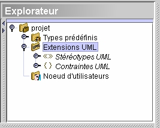

Extension
UML

UML définit trois mécanismes d’extensibilité pour
permettre aux modeleurs d’ajouter
quelques extensions sans être contraint de modifier le langage de
modélisation sous-jacent.
Ces trois mécanismes sont stéréotypes, contraintes
et “tagged values”. Chaque
projet est doté d’un noeud Extensions UML. Les Stéréotypes UML
et les Contraintes UML
sont rassemblés dans ce noeud.
UML permet l'ajout d'une paire de chaînes (une chaîne
d’étiquette et une chaîne de
valeur ) sur chaque élément du modèle. Pour ceux
qui considèrent cette fonction trop
limitée, les propriétés d'utilisateurs
permettent les mêmes types de fonctions, mais de
surcroît leur valeur peut être de n'importe quel type
(chaîne, nombre entier, booléen, et
ainsi de suite). Ainsi, les propriétés d'utilisateurs
agissent de la même façon que les UML
“tagged values” mais de façon plus puissante. Pour plus de
détails: voir Propriétés
d'utilisateurs
.
